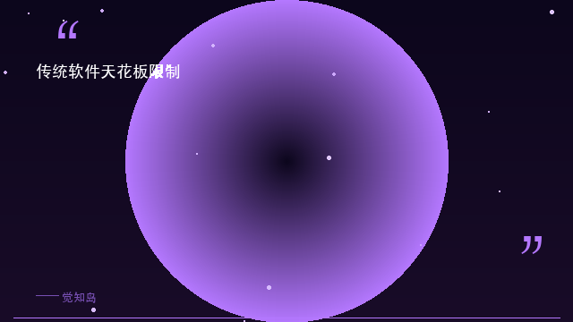
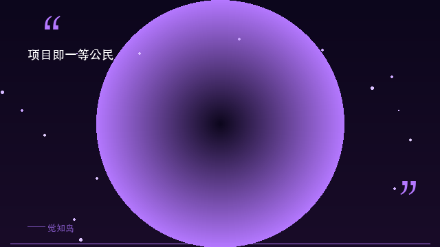
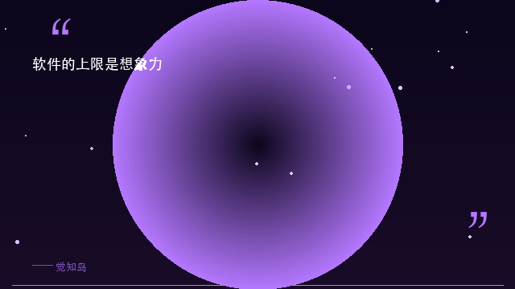

你有没有一种感觉：电脑上的软件越来越多，功能却越来越「卡」——不是性能卡，是边界卡。PS 永远变不成数据透视工具，Excel 永远不能做视频剪辑，Trello 永远不会自动帮你写周报。你买它的那一天，它的上限就已经被锁死了。
AI 时代来了，这个问题不但没解决，反而更尖锐了：你需要的不是一个更聪明的聊天机器人，而是一个能不断生长出新能力的平台。今天，我们聊聊这个问题的答案。

想想看：每一款软件的功能边界，从它诞生的第一天就已经被写死了。Adobe 的工程师决定了 Photoshop 能做什么，Microsoft 的产品经理决定了 Excel 不能做什么。你想让 PS 做数据透视？想都别想。你想让 Excel 修图？异想天开。
这背后是传统软件模式的先天缺陷：功能由开发者预设，用户只能「用」，不能「变」。你不是软件的主人，你是功能的租客——你用月费换取使用权，但永远拿不到「产权」。
更致命的是，AI Agent 的爆发让这个矛盾急剧恶化。你需要的工作流不再是「打开一个软件完成一件事」，而是多 Agent 协作、跨工具流转、持续积累知识。五六个不同的 SaaS 窗口来回切，数据不通、流程断链、经验无法沉淀——这种碎片化的工作方式，在 AI 时代已经明显不够用了。
传统软件是买定离手——功能、边界、体验，从你付费那一刻就被锁死了。

ClawDao 对这个问题的解法，不是提供一个「功能更多」的超级 App，而是从根本上改变软件的原子单位。它的核心设计哲学只有一句话：一切皆是项目，项目是一等公民。
那「项目」到底是什么？一个项目 = 一个本地文件夹 + 元数据 + 可选的能力组件。听起来很简单对吧？但正是这个简单的抽象，打开了无限可能。
你往项目里添加一个 Agent，它就变成编码助手；添加数字人组件，变成直播工具；接入知识库，变成企业智库；配置工作流，变成自动化协作平台。同一个文件夹，不同的能力组合，产生完全不同的「软件」。而且关键在于——Agent 不是核心，项目才是。Agent 不过是入驻项目的一种组件。今天用 Codex，明天换 OpenClaw，项目都在，数据都在，你的能力积累不会被任何一个 Agent 绑定。
在 ClawDao 里，Agent 不是核心，项目才是。项目是你所有能力的容器，Agent 只是容器里的一个角色。
这不是炫概念，而是实实在在改变了你使用软件的四个维度：
🧩 无上限：ClawDao 的功能 = 你和你社区创建的所有项目的总和。每一个新项目都是一次功能扩展。只要有人创造了一个新项目模板，你就获得了一种新能力。
🔓 零锁定：项目就是文件夹，任何工具可读、可 Git 管理、可迁移。你的数据永远在你手里，不会被任何一个平台绑架。
🌱 可进化：项目会积累对话、知识库、行为记录，越用越懂你。它不是静态容器，而是和你一起成长的有机体。
🚀 可分享：一个项目就是一个完整的能力单元，打包给团队一键部署。你的最佳实践可以变成别人的起点。

我们习惯了软件有天花板——某个功能「做不到」是常态，找替代工具是日常。但如果换个视角：一个空文件夹就是你的起点，你能往里面添加的能力就是这个软件的上限——那上限在哪里？
你的想象力在哪里，软件的上限就在哪里。
软件的上限不是开发者决定的，是你的想象力决定的。觉知岛的信念是「知人者智，自知者明」——认清工具的本质，才能超越工具的限制。
你遇到过最让你想砸电脑的软件限制是什么？一个本该自动完成、却让你手动折腾了三小时的功能？评论区分享，我们一起吐槽 🌊